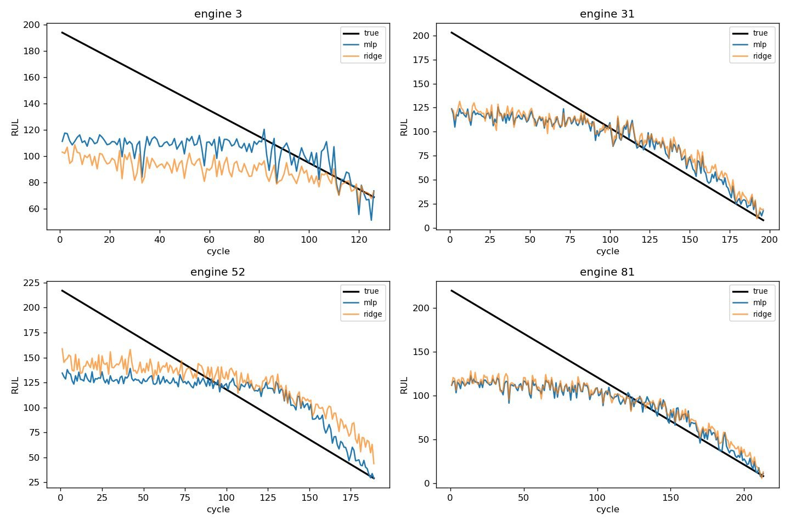
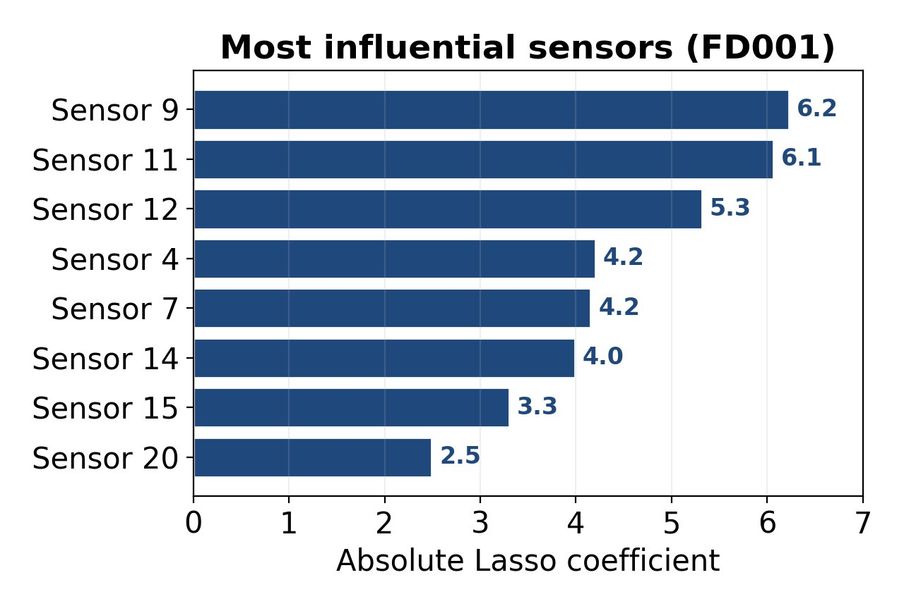
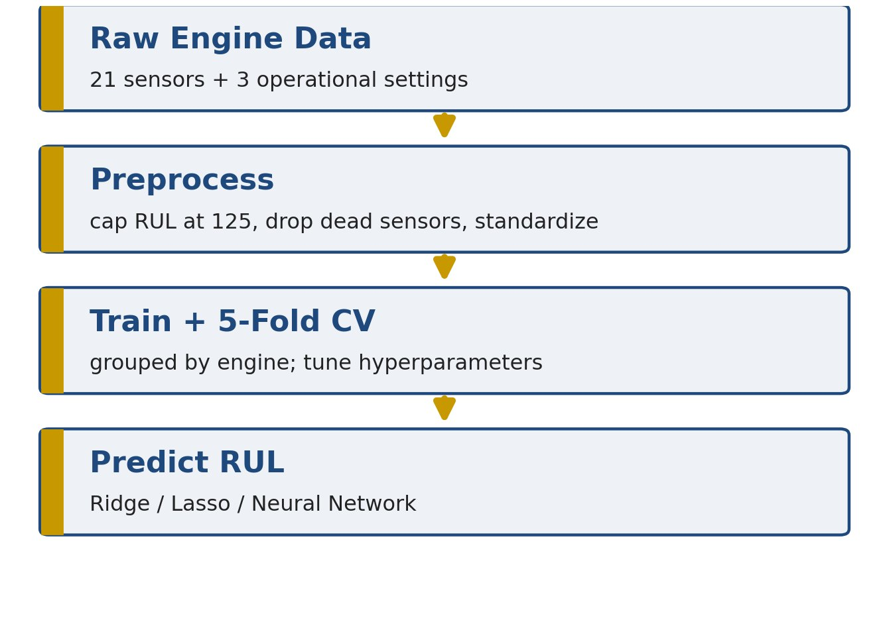
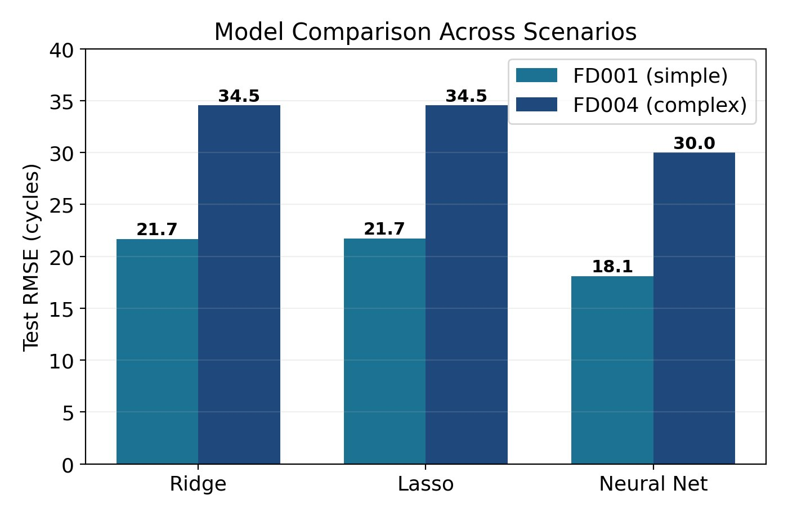
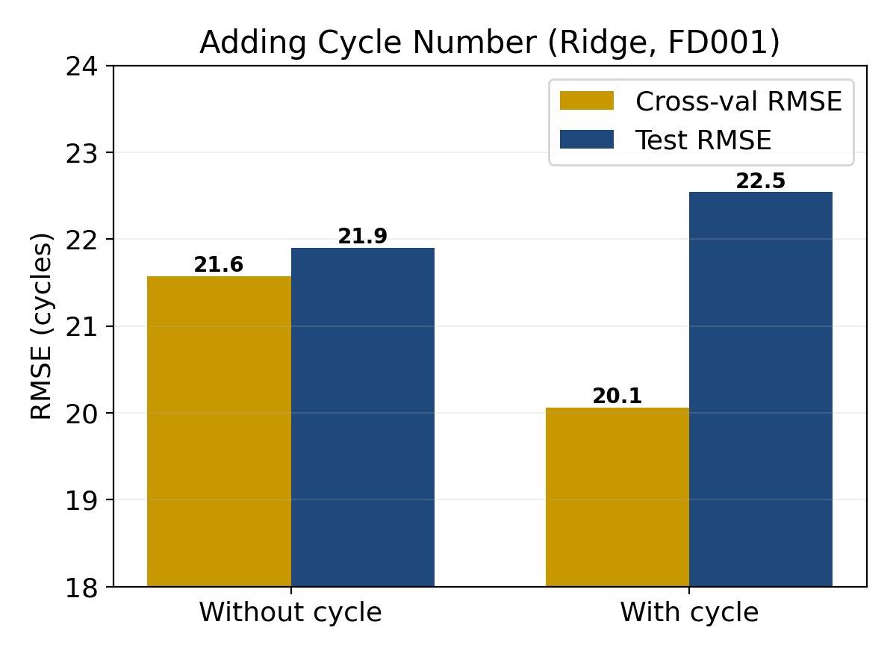
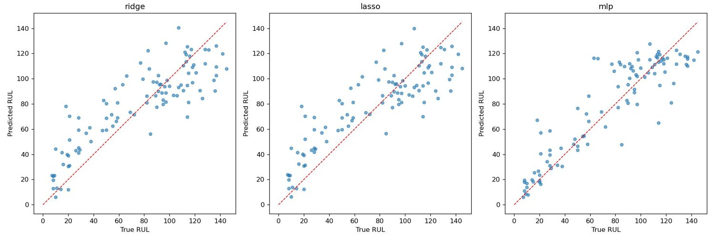
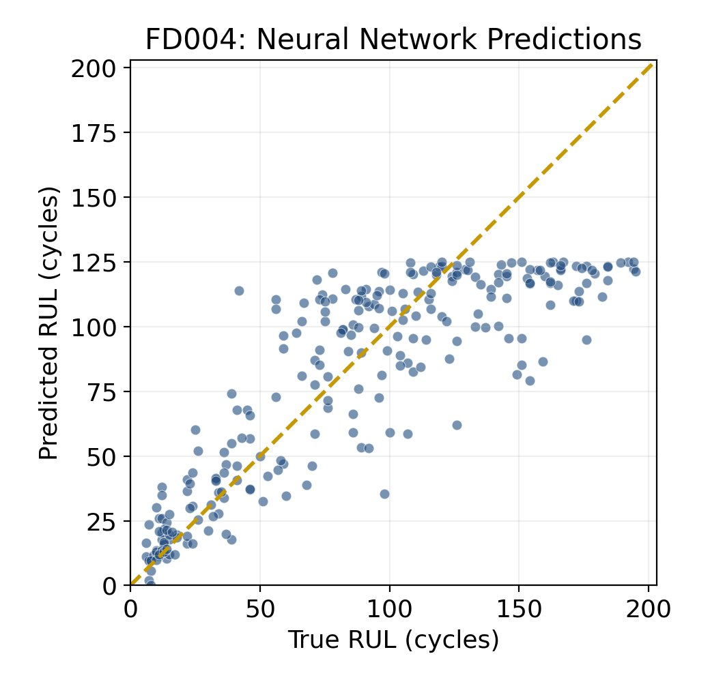

Estimating how many operating cycles a turbofan engine has left from its sensor stream, so maintenance can be scheduled before failure, and asking which regression model actually earns its complexity.
Aircraft engine failures are costly and disruptive. Predictive maintenance estimates an engine's Remaining Useful Life, the number of cycles before failure, so it can be serviced proactively. With Logan Li, I asked whether RUL can be predicted from sensor measurements and operational settings, which model does it best, and whether a tempting extra feature actually helps.
The project compares three regression models on a standard benchmark, and runs a clean experiment on a second question, does adding the engine's age (its cycle number) as a feature help or hurt, that turns out to have a counterintuitive answer.
The NASA C-MAPSS turbofan simulation is the standard RUL benchmark. Each engine is a multivariate time series of 3 operational settings and 21 sensors, run from healthy operation to failure.
Two scenarios bracket the difficulty: FD001 with one operating condition and one fault mode, and FD004 with six operating conditions and multiple fault modes, the hardest case in the suite. Preprocessing caps the training RUL at 125 cycles, since a healthy engine carries little degradation signal, drops sensors that never vary, and standardizes the rest. For FD004, rows are clustered into the six operating regimes and standardized within each regime, which removes operating-condition effects and lets the degradation signal show through.

Each model predicts a continuous RUL value. The linear pair sets the bar; the neural network tests whether nonlinearity is worth it.
An L2 penalty shrinks all coefficients toward zero to control overfitting. Fast, stable, a natural baseline.
An L1 penalty also performs feature selection, driving unhelpful coefficients exactly to zero and revealing which sensors matter.
A multilayer perceptron with ReLU activations, dropout, and early stopping, able to represent the curved, accelerating sensor-to-RUL relationship.
Regularization strength and network architecture were tuned by 5-fold cross-validation on the grouped split.
The neural network wins on every metric and both scenarios, but the more interesting story is why the two linear models land in almost the same place.


Because no single sensor dominates, Ridge and Lasso perform almost identically, so the regularization choice barely matters here. The neural network's edge comes from combining many weak signals nonlinearly, not from weighting any one sensor differently. On FD001 it improves RMSE by about 3.6 cycles and explains 81% of the variance against 73% for the linear models.
| Model | RMSE | MAE | R² |
|---|---|---|---|
| Ridge | 21.67 | 17.44 | 0.728 |
| Lasso | 21.73 | 17.48 | 0.727 |
| Neural network | 18.10 | 13.11 | 0.810 |

FD004 adds six operating conditions and multiple fault modes. Every model's error roughly doubles, but they do not all degrade equally.
As the problem grows more complex, the neural network's advantage over the linear models grows with it: the RMSE gap widens from 3.6 to 4.5 cycles. That is the clearest sign that the nonlinearity is doing real work, not just fitting noise on the easy case.


RUL is predictable from sensors and settings with good accuracy, up to an R² of 0.81. Neural networks win on both scenarios and widen their lead as the problem grows more complex and nonlinear. Ridge and Lasso are nearly tied, which is itself a finding: the predictive signal is spread across many sensors rather than concentrated in a few. And the cycle-number experiment is a clean cautionary tale, a feature that lowers cross-validation error can still hurt the real test metric when the deployment data looks different from training.
Next step: engineer time-derivative sensor features, the rate at which each channel trends toward failure, to capture not just an engine's state but how fast it is degrading.